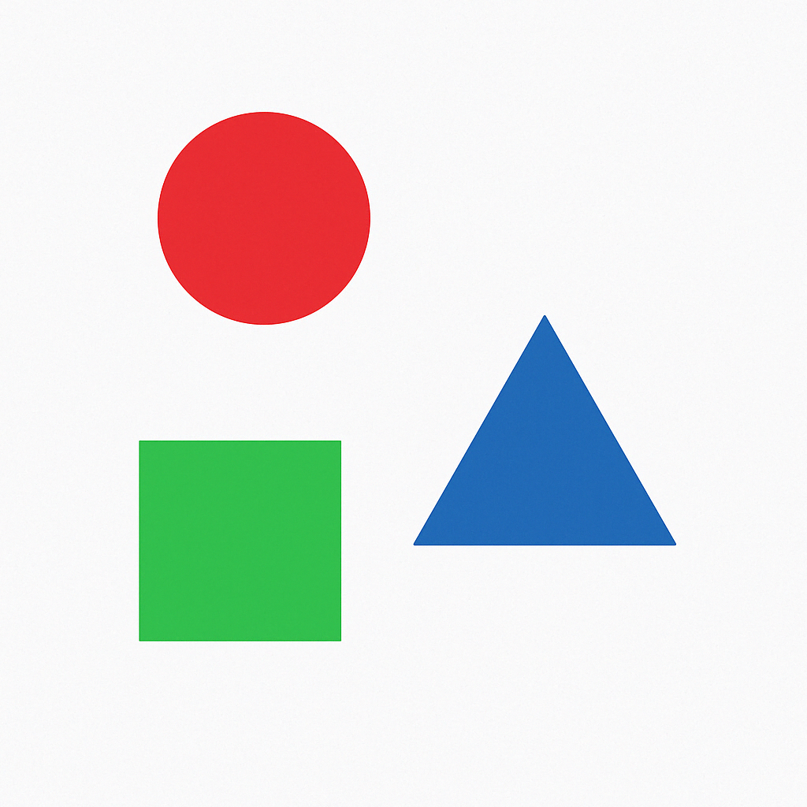

Full URL Path:
POST http://146.190.147.242:3000/api/describe
This endpoint takes in an image and will provide a description of the image and other fields.
Parameters
confidence — A decimal value between 0 and 1 used to grab predictions above this threshold. (Refer to the details below for explanation.)
Headers
{
"Content-Type": "multipart/form-data"
}
Request Body
An image file uploaded as multipart/form-data. The field name should be photo.
What is the confidence parameter?
In machine learning, an algorithm provides predictions along with a score representing how "confident" it is in the
prediction.
For example, consider the following image:

Suppose the algorithm detects a square in this image with a confidence score of 0.99.
By specifying the confidence parameter in the /describe endpoint, you are instructing the API
to only return predictions with a score higher than your specified threshold.
Higher confidence thresholds generally result in fewer, but more accurate, predictions.
Example API Call (Postman)
Follow these steps to test the /describe endpoint using Postman:
Open Postman and create a new POST request.
Set the URL to: http://146.190.147.242:3000/api/describe
Switch to the Body tab and select form-data.
Add a new key called photo.
Set the type to File and upload your image file.
Under the Headers tab, verify that you have:
Key: Content-Type
Value: multipart/form-data
Postman should already set the header and boundary for you.
Optionally, add a query parameter to the URL if you want to specify confidence, e.g., ?confidence=0.8.
Click Send to submit your request and receive the response.
Response Types
The successful response returns a JSON object with the following fields:
description — A textual description of the detected content.
associatedWords — An array of related words/tags.
width — Width of the image.
height — Height of the image.
confidence — Confidence score for the prediction.
Error Codes
If something goes wrong, the API will respond with appropriate error codes:
400 Bad Request — No file was uploaded. Ensure that the request contains a file named photo in the form-data.
500 Internal Server Error — An unexpected error occurred on the server.
Occurs when:
An invalid file format is uploaded (e.g., a PDF file instead of an image file).
The image is too small or too large for processing. Azure requires images to be between 50×50 to 16,000×16,000 pixels
An error occurred while communicating with the Azure Computer Vision service.
Here is the sample response if we use the shapes from above
{
"description": "a group of geometric shapes",
"associatedWords": [
"graphics",
"design"
],
"width": 1024,
"height": 1024,
"confidence": 0.1
}